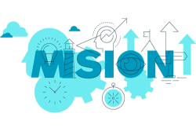

Nuestra Historia

KameStore fue fundada en 2020 con el propósito de ofrecer una colección única de ropa moderna y accesible. Desde nuestros inicios, hemos buscado brindar a nuestros clientes prendas de alta calidad que se adapten a su estilo de vida.
A lo largo de los años, hemos crecido y evolucionado, pero nuestra pasión por la moda y el compromiso con la satisfacción del cliente siempre han sido nuestra prioridad.
Nuestra Misión
Nuestra misión es ofrecer ropa de alta calidad que no solo sea stylish, sino también cómoda y accesible para todos. Nos esforzamos por ser un referente en el sector de la moda, promoviendo la sostenibilidad y el comercio justo.
Valores de KameStore
- Calidad: Cada prenda es seleccionada con rigurosidad para asegurar su durabilidad y estilo.
- Servicio: Nuestro equipo está siempre dispuesto a ayudar y brindar la mejor experiencia de compra.
- Sostenibilidad: Trabajamos con proveedores que comparten nuestra visión de un futuro más sostenible.